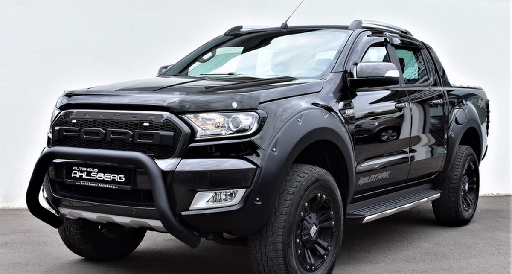
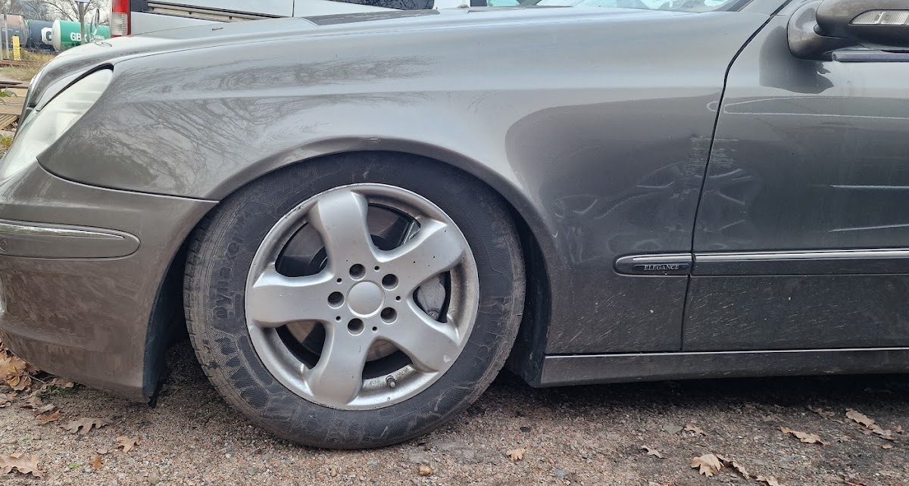
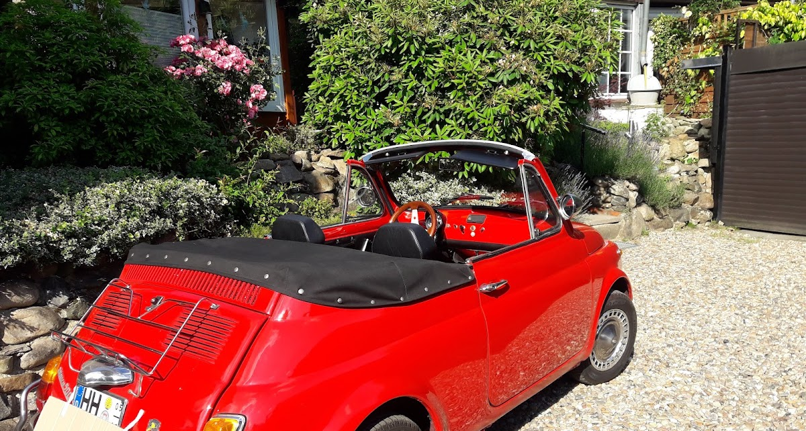

Repariert, was andere aufgegeben haben.
Ehrliche Diagnose, faire Preise und der Ruf, Autos wieder flottzumachen, bei denen andere Werkstätten längst abgewunken haben — das ist Robert Wanke Automobile am Havighorster Weg in Bergedorf.

Kompetent, zuverlässig, ohne Umwege.
Am Havighorster Weg in Bergedorf geht es um eine Sache: Fahrzeuge wieder zuverlässig auf die Straße zu bringen — mit klarer Diagnose statt Rätselraten und ohne unnötige Posten auf der Rechnung.
Kundinnen und Kunden beschreiben die Arbeit hier seit Jahren mit denselben Worten: zuverlässig, kompetent, hilfsbereit. Genau das ist der Anspruch — auch bei Fahrzeugen, bei denen andere Werkstätten längst abgewunken haben.
„Rettet Autos, die andere längst aufgegeben haben.“
Viola M., Google-Bewertung

Vom Alltagsauto bis zum Umbau — wir fassen an, wo andere zögern.
Was wir tun
Erster Überblick auf Basis der Werkstatt-Kategorie — [genaue Leistungsliste gemeinsam mit Robert bestätigen].
Inspektion & Wartung
Regelmäßiger Service nach Herstellervorgabe, markenübergreifend.
Diagnose & Reparatur
Fehlersuche mit System — auch wenn andere Werkstätten nicht mehr weiterwissen.
Reifen & Räder
Reifenwechsel, Einlagerung und Räderwuchten.
Bremsen & Fahrwerk
Verschleißteile prüfen, tauschen und sauber einstellen.
Karosserie
Instandsetzung nach Unfall- oder Gebrauchsschäden.
Weitere Leistungen
[z. B. Klimaservice, HU-Vorbereitung, Ankauf — bitte ergänzen]

Nicht nur Alltagsautos.
Neben Alltagsfahrzeugen kommen hier auch Klassiker auf die Bühne — dort, wo Ersatzteile knapp sind und Erfahrung zählt.
[Erfahrung mit Oldtimern und konkrete Beispiele mit Robert abstimmen]
Was Kundinnen und Kunden sagen
-
„Zuverlässige Werkstatt, immer hilfsbereit — das Preis-Leistungs-Verhältnis stimmt.“
-
„Super freundlich und hilfsbereit, hat sogar recherchiert, um mir Kosten zu sparen.“
-
„Zuverlässig und kompetent — rettet Autos, die andere längst aufgegeben haben.“
-
„Sehr gute Werkstatt, kompetent und kundenorientiert, sehr gutes Preis-Leistungs-Verhältnis.“
-
„Immer wieder kompetente Beratung und schneller Service.“
Vorbeikommen oder anrufen
Für Termine, Fragen zur Reparatur oder einen ersten Kostenrahmen — am besten kurz anrufen.
- Adresse
- Havighorster Weg 14
21031 Hamburg-Bergedorf - Telefon
- 040 38073763
- [E-Mail-Adresse ergänzen]
- Öffnungszeiten
-
Mo – Fr [Uhrzeit ergänzen] Sa [ggf. ergänzen] So geschlossen
Die Karte wird von Google geladen. Dabei wird deine IP-Adresse an Google übertragen.